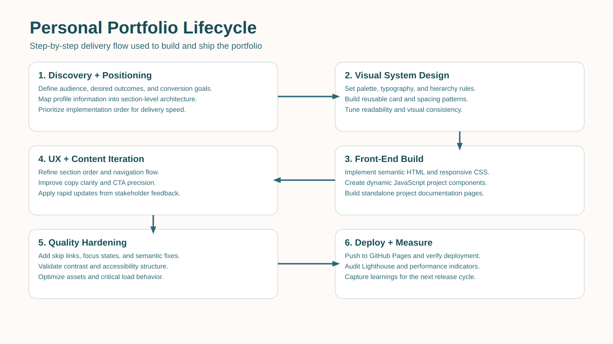
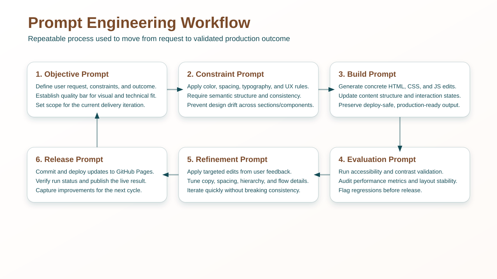
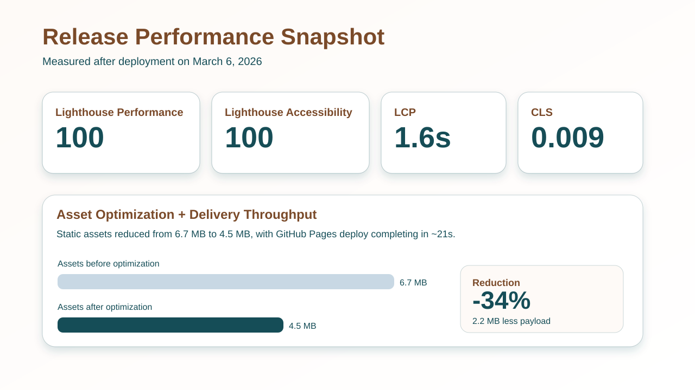

Independent Project
Personal Portfolio
End-to-end design, engineering, and deployment of a high-conversion personal portfolio built to showcase analytics experience, project depth, and production-level front-end quality for recruiters and hiring teams.
Problem Statement
The initial need was a portfolio that looked professional and differentiated, while staying easy to deploy and maintain. It also needed to support ongoing project documentation, communicate measurable business impact, and be optimized for both desktop and mobile experiences.
- Present analytics experience in a clean, executive-ready format.
- Create a scalable project section with standalone documentation pages.
- Build a modern visual system with consistent hierarchy and stronger brand signal.
- Harden accessibility and performance to production standards.
Lifecycle Overview

- Discovery and information architecture planning from profile content.
- Visual direction creation with explicit palette, typography, and spacing rules.
- Implementation of semantic HTML, modular CSS, and dynamic JavaScript project cards.
- Rapid refinement loops for section order, text hierarchy, spacing, and CTA flows.
- Accessibility hardening (skip link, keyboard focus, heading order, contrast checks).
- Performance hardening and production deploy via GitHub Pages CI workflow.
Prompt Engineering Approach
This project was delivered using a structured prompt engineering workflow to turn business goals into implementation-ready front-end updates. Prompts were sequenced by objective, constraints, implementation, evaluation, and refinement to reduce rework and preserve consistency across design and code decisions.

Prompt Pattern: Design Direction
Enforced specific color hex values, section hierarchy, UI accents, and navigation behavior to produce a cohesive brand-aligned interface.
Prompt Pattern: Content Structuring
Transformed generic project descriptions into fixed schema summaries: Users, Data sources, Methods, Outcome.
Prompt Pattern: Quality Gates
Added explicit accessibility and performance hardening prompts to force measurable validation before release.
Models, Software, and Platforms
OpenAI GPT-5 Codex (prompt-guided implementation)
HTML5
CSS3
JavaScript (vanilla)
Git
GitHub
GitHub Actions
GitHub Pages
Lighthouse
Credential.net outbound links
Outcomes, Results, and Indicators

100Lighthouse Performance
100Lighthouse Accessibility
1.6sLargest Contentful Paint
0.009Cumulative Layout Shift
0.9sFirst Contentful Paint
20msMax Potential FID
-34%Static Asset Payload
~21sGitHub Pages Deploy Runtime
Metric Glossary
LCP
Largest Contentful Paint measures how quickly the main visible content appears.
CLS
Cumulative Layout Shift tracks unexpected visual movement while the page loads.
FID
First Input Delay estimates input responsiveness when users first interact.
FCP
First Contentful Paint marks when the first piece of content is rendered.
TBT
Total Blocking Time captures JavaScript blocking that can delay interactions.
Lighthouse Scores
Overall audit scores summarize quality across performance and accessibility checks.
- Asset footprint reduced from 6.7 MB to 4.5 MB (2.2 MB reduction).
- Project preview UX standardized to a recruiter-friendly four-field format.
- Experience section now includes quantified outcomes to improve business credibility.
- Design and content refined through 20+ targeted revision cycles.
Why This Matters to Employers
- Demonstrates ownership across product thinking, front-end execution, and release engineering.
- Shows ability to convert stakeholder feedback into high-quality shipped outcomes quickly.
- Combines analytics storytelling with measurable UX and performance quality controls.
- Provides a scalable case-study foundation for future data analysis projects.